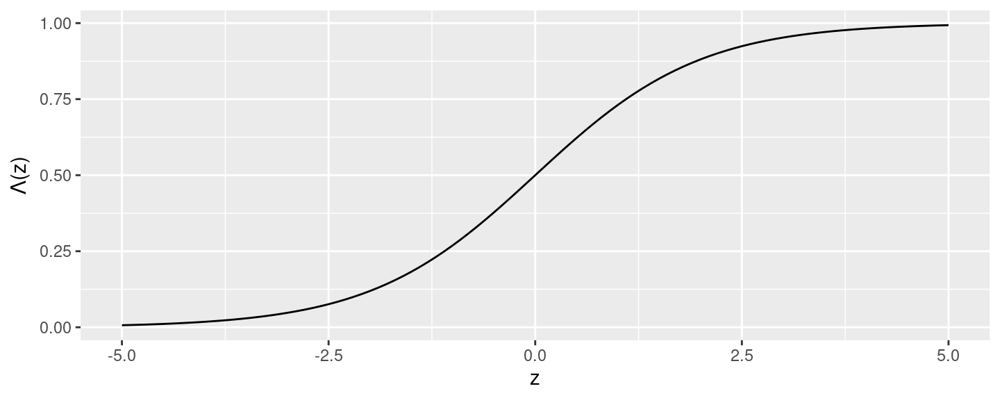

- La regresión lineal puede usarse respuestas binarias (no más de dos categorías), aunque genera predicciones fuera del rango \(\small [0,1]\)
- Solución: aplicar al índice lineal una transformación \(\small F(z)\in[0,1]\)
- La función logística: \(\small \Lambda (z)=\frac{e^z}{1+e^z}\)

- De manera que \(\small \Pr(Y=1|X)= p(x)= \Lambda( \beta_0 + \beta_1 x_1 + \ldots + \beta_k x_k)\)